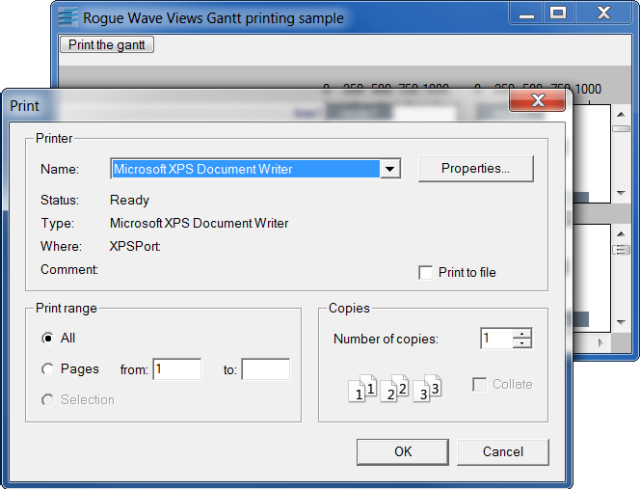

printMultiple Pages Gantt Chart Printing.
This sample prints a gantt chart using Postcript or Windows printer. It uses a class called GanttChartPrintingUtility.
Multiple pages printing is handled by this class. On each page, the gantt lines and scale are printed according to the part of the gantt chart which is supposed to be displayed.
IlvPSDeviceIlvWindowsDeviceIlvGanttChart